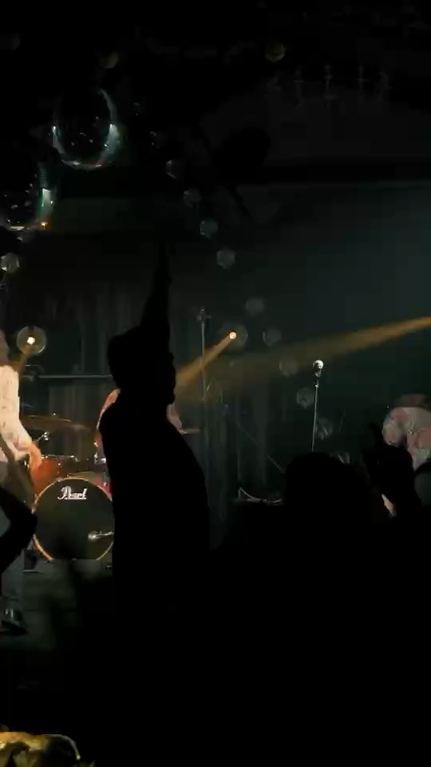
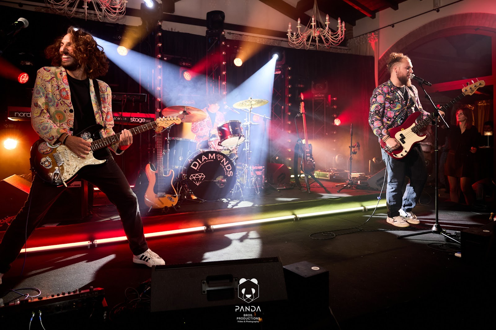
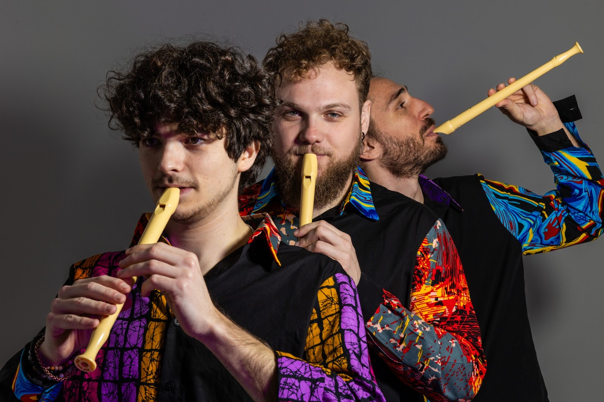
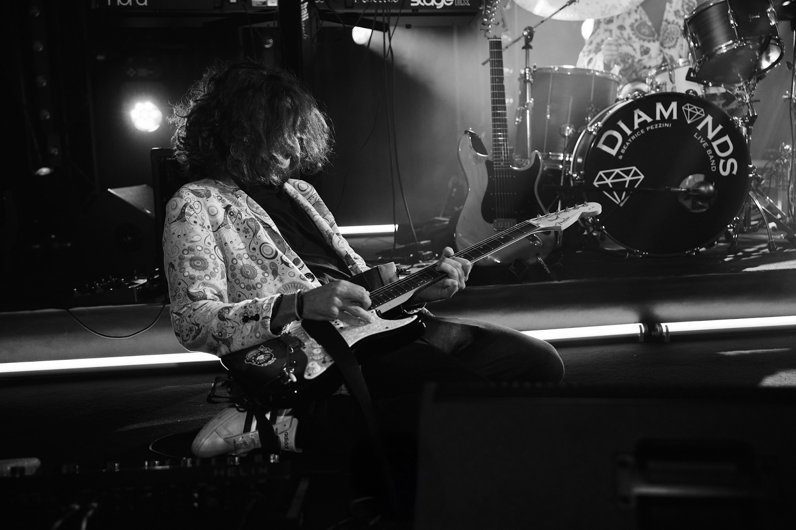
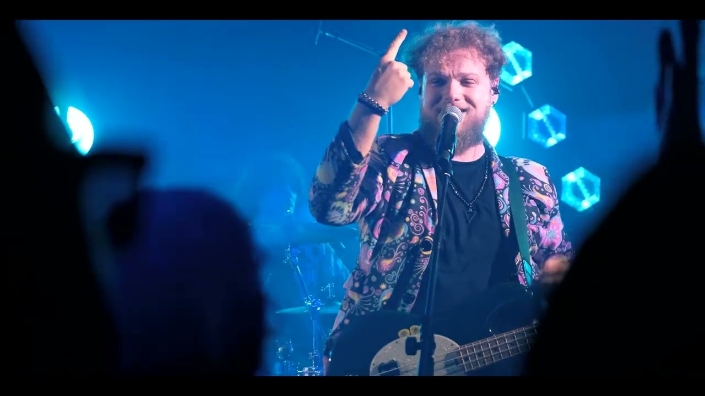
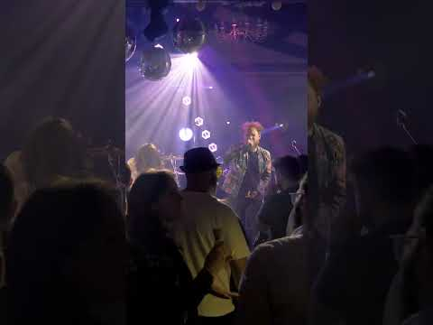
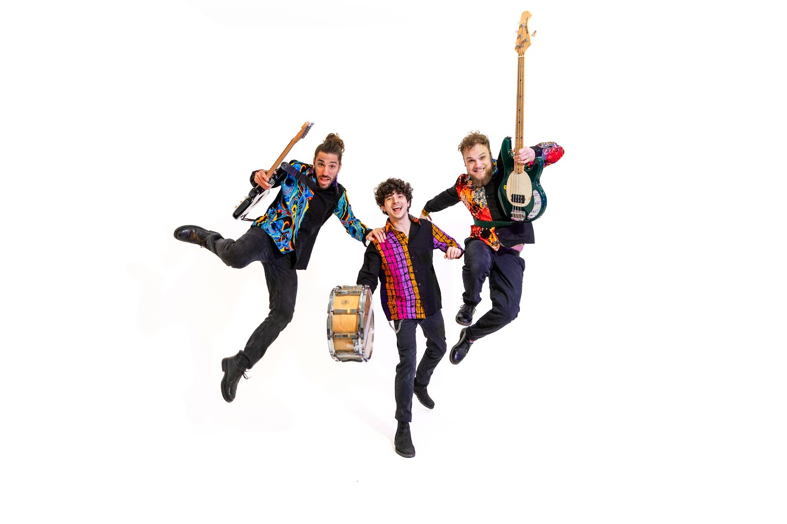

La party band per matrimoni ed eventi
Tre musicisti, due ore di medley dagli anni '60 a oggi, senza pause. 20 matrimoni e oltre 90 serate in due stagioni, tra Veneto, Lombardia e Trentino.
Il vostro matrimonio, momento per momento
-
Cerimonia e aperitivo in acustico
Voce e chitarra per l'ingresso, gli anelli e il brindisi. Ci preparate i brani, noi li cuciamo sui vostri momenti.

-
La party band, due ore senza pause
Un medley da quindici minuti per ogni decennio: dagli anni '60 alle hit di oggi, con il vostro primo ballo dal vivo.

-
DJ set fino a tardi
Quando la band chiude, la musica continua: DJ set su richiesta, con le luci e l'impianto che sono già lì.

Eventi e locali. Lo stesso show, dove volete voi.
- Locali e pub
Due ore di show, anche con l'impianto del locale.
2 ore - Sagre e piazze
Impianto per spazi grandi e all'aperto, palco da 4x3 m.
All'aperto - Feste private
Compleanni, anniversari, il giardino di casa o un veliero sul lago.
Su misura - Aziende e Capodanno
Cene aziendali, fiere e la notte di San Silvestro in piazza.
Tutto l'anno




Lo show in un minuto. E un assaggio di ogni decennio.




Come suoniamo
Ogni decennio è un blocco da quindici minuti, un pezzo dentro l'altro, senza fermarsi. Giochiamo con il pubblico e lo portiamo in pista. Se non ballano anche le nonne, non siamo contenti.
Le coppie su Matrimonio.com
Hanno un'energia contagiosa che fa ballare chiunque, persino le zie settantenni. Avremmo voluto che non smetteste mai di suonare.
Grazie ai medley la serata è stata super dinamica e ha fatto ballare tutti, persino le nonne.

Le domande che ci fate
In che zone suonate?
Siamo di Verona: suoniamo in tutto il Veneto, sul Lago di Garda, in Lombardia e in Trentino. Per le date più lontane chiedeteci pure.
Che musica suonate?
Le hit che fanno ballare tutti, dagli anni '60 a oggi: pop, rock e dance italiani e internazionali, in medley per decennio. Le vostre canzoni del cuore le aggiungiamo volentieri.
Quanto dura lo show?
Due ore di live, in blocchi da circa quindici minuti per decennio. Prima, se volete, la cerimonia e l'aperitivo in acustico; dopo, il DJ set.
Portate voi l'impianto?
Sì: audio e luci sono nei pacchetti, con il fonico in quelli più completi. Nei locali possiamo usare anche l'impianto di casa.
Che spazio vi serve?
Un palco di almeno 4x3 metri, corrente a 220V con due o tre prese, un riparo se si suona all'aperto e un posto dove cambiarci.
Quanto prima arrivate?
Da una a due ore prima, per montare e fare il soundcheck. Ci serve un parcheggio o una zona di carico vicino all'ingresso.
E la SIAE?
I permessi SIAE sono a carico di chi organizza: vi diciamo noi cosa serve e quando farli.
Chiedi un preventivo
La data, il posto e che festa è: vi rispondiamo con la disponibilità e il preventivo, di solito entro un giorno.